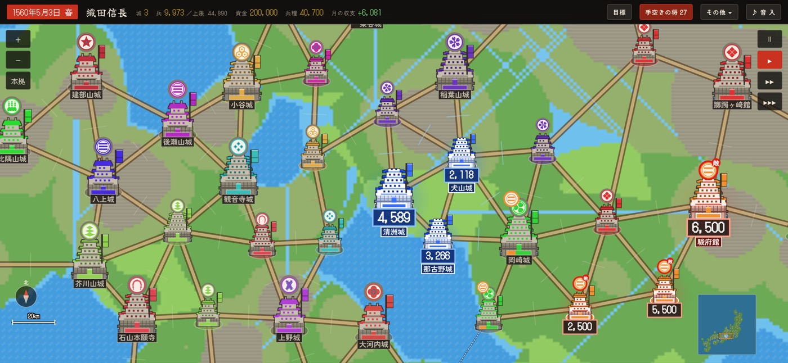

桶狭間 奇襲 攻略
織田側は斥候で今川本陣の位置を確かめ、豪雨と見つかりにくい道を使って義元へ近づきます。
奇襲は雨だけで成立しません。本陣が気づく前に接近し、逃げる義元を戦場の端までに討ち取ります。

報せと道を選ぶ
織田家は兵を集め、今川本陣の報せと進む道を決めます。報せが外れると本陣は別の場所にあり、空振りすると士気が下がります。決戦中も位置を確かめ直します。
街道は速い一方で発見されやすく、丘や谷は発見されにくい代わりに移動が遅くなります。谷では疲労も増えます。速度だけで道を選ばず、敵の警戒範囲を避けます。
斥候と豪雨で本陣を見つける
〈斥候を出す〉で手がかりが一段進み、所在不明から位置判明まで絞れます。斥候の再使用は二十五秒後。本陣の近くまで進んでも位置が判明します。
曇りから途中で豪雨になります。雨は視界と鉄砲に響き、待機中の今川隊の士気と疲労にも影響します。雨を待つ選択では早く雨になりますが、本陣の守りも増えるので無条件に有利ではありません。
奇襲成功から義元の追撃まで
本陣に察知される前にごく近くへ入り込めば、奇襲成功で義元の士気が大きく下がり、護衛が混乱します。遠くで見つかると守りを整えられ、雨が降っても正面攻撃になります。
周囲の今川隊を片端から追わず、判明した義元本陣へ集中します。本陣が気づくと今川の各隊が動き始めます。
義元は兵や士気が減ると大高へ逃げます。戦場の端まで逃がすと引き分けになるため、退路を見て追撃を続けます。
よくある問い
豪雨になれば必ず奇襲が成功する？
雨だけでは成立しません。今川本陣が気づく前に近づく必要があります。斥候で位置を確認し、察知されにくい道を選んで義元本陣を狙います。